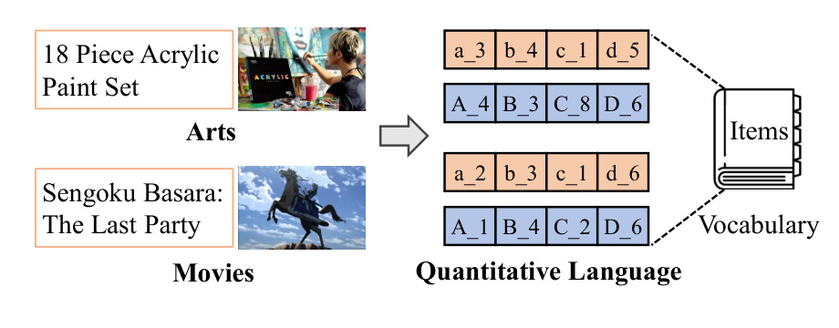
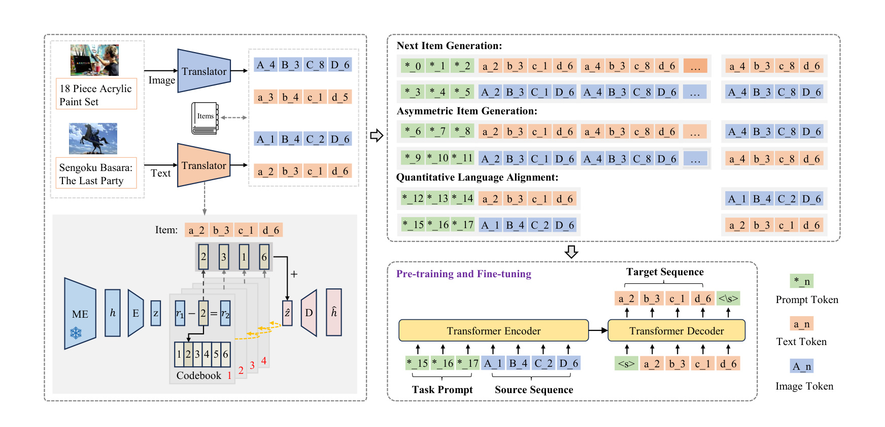
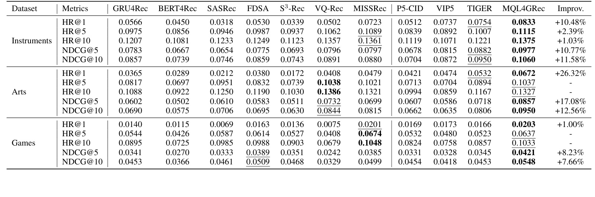
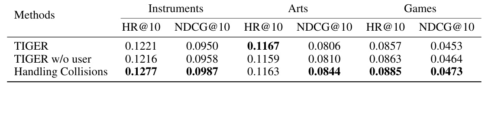
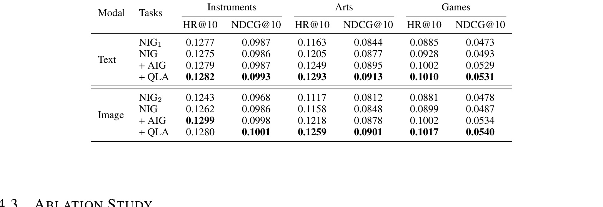
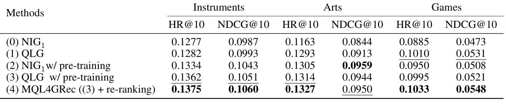
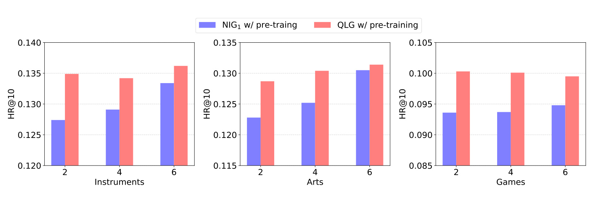
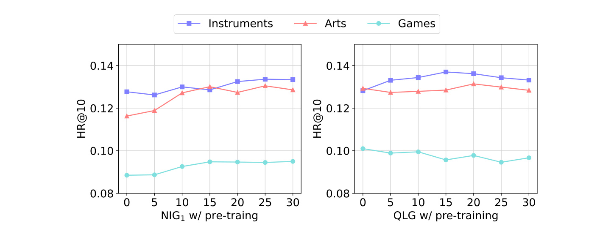

MQL4GRec：面向生成式推荐的多模态量化语言
基本信息
| 字段 | 内容 |
|---|---|
| 英文标题 | Multimodal Quantitative Language for Generative Recommendation |
| 中文标题 | MQL4GRec：面向生成式推荐的多模态量化语言 |
| 作者 | Jianyang Zhai, Zi-Feng Mai, Chang-Dong Wang, Feidiao Yang, Xiawu Zheng, Hui Li, Yonghong Tian |
| 机构 | Sun Yat-sen University；Pengcheng Laboratory；Guangdong Key Laboratory of Big Data Analysis and Processing；Xiamen University；Peking University |
| 来源 | OpenReview；ICLR 2025 |
| 日期 | 2025-01-22 OpenReview publication record |
| 论文入口 | OpenReview:v7YrIjpkTF |
| 代码/项目 | GitHub: zhaijianyang/MQL4GRec |
| 本地 PDF | 中山大学-MQL4GRec.pdf |
| 历史重复 | 未发现已有完整 MQL4GRec 本地笔记或主页页面；此前只作为 SynGR/MACRec 的相关工作或 baseline 出现 |
一句话结论
MQL4GRec 的核心思想是把不同领域、不同模态的 item 内容都翻译成一种共享的 quantitative language，让生成式推荐不再依赖原始 item ID，也不只是把 PLM 当作文本生成器。它用文本和图像各自的 RQ-VAE translator 将 item 内容转成小写/大写前缀的离散 token，共同组成一个跨域跨模态词表；再设计 next item generation、asymmetric item generation 和 quantitative language alignment 三类生成任务，通过 source-domain pre-training 与 target-domain fine-tuning 迁移推荐知识。
但从工业推荐系统的成本收益比看，这篇论文更像一个“概念组合型” representation learning story，而不是一个划算的上线方案。它可以压缩成 TIGER 式 RQ-VAE semantic ID、文本/图像双模态 SID、六类生成任务、双分支 beam search 后融合。这个组合在 ICLR 语境下叙事完整，因为它踩中了 semantic ID、generative recommendation、multimodal、cross-domain transfer、shared vocabulary 和 pretraining-finetuning；但它也明显增加了 translator 训练、双 SID 维护、多任务训练、双分支解码和启发式 fusion 的复杂度。后面读这篇论文时，应同时保留两种判断：学术上它是合格的统一框架，工业上它的完整 pipeline 不值得直接照搬。
背景与问题
传统推荐系统通常用 unique item ID 表示物品。IDRec 的优势是简单、稳定、易训练，但它把 item 当作离散编号，难以表达文本、图像和跨域知识；新 item 或冷启动 item 也很难从内容中自然获得可迁移表示。随着 PLM 和 seq2seq 生成模型进入推荐领域，生成式推荐开始把目标 item 的标识符当成要生成的 token 序列，这给“把推荐改写成语言生成任务”提供了机会。
但直接把自然语言 PLM 用到推荐有明显错位。PLM 的词表和预训练任务面向通用语言，而推荐需要表达商品、电影、游戏、乐器等 item 的离散身份、相似关系和用户偏好迁移。用自然语言描述 item 太长、噪声大、生成空间过宽；用原始 item ID 又没有跨域语义，难以把一个领域学到的推荐知识迁移到另一个领域。MQL4GRec 的切入点正是这个中间地带：构造一种比自然语言更短、比 item ID 更有语义、且跨模态共享的“量化语言”。

图 1 把论文动机压缩得很清楚。Arts 里的 “18 Piece Acrylic Paint Set” 和 Movies 里的 “Sengoku Basara: The Last Party” 原本属于不同领域，也有文本和图片两种内容；MQL4GRec 希望把它们都翻译成由共享词表组成的短 token 序列，例如文本 token 使用 $a,b,c,d$ 前缀，图像 token 使用 $A,B,C,D$ 前缀。这样，模型学习到的不是某个领域的 item 编号，而是一套可以跨领域、跨模态复用的离散语言。
这篇论文的关键假设是：推荐知识可以通过共享 token vocabulary 迁移。自然语言模型之所以能迁移，是因为不同任务共享词表和语义 token；推荐如果也能把不同领域 item 映射到共享的 quantitative language，就可以通过 pre-training/fine-tuning 迁移 source-domain 的推荐模式。同时，文本和图像被翻译到同一套语言框架后，模型也能通过跨模态任务学习用户偏好的不同侧面。
核心方法
MQL4GRec 可以分成三个层次：第一，用 quantitative translator 把 item 文本和图像变成离散 token；第二，设计 quantitative language generation tasks，让这些 token 不只是压缩码，而是带有推荐语义的语言；第三，通过 pre-training、fine-tuning 和 reranking 把 source-domain 与 multimodal knowledge 转移到目标推荐任务。

图 2 左侧展示 translator：冻结的 modal encoder 先把文本或图像变成连续 representation，再由 RQ-VAE 量化成多层 codeword。中间的 codebook 构成 quantitative language vocabulary。右侧展示三类任务：Next Item Generation 负责主推荐目标，Asymmetric Item Generation 让一种模态历史预测另一种模态目标，Quantitative Language Alignment 直接在 item level 对齐文本和图像 token。下方的 encoder-decoder 模型通过 task prompt、source sequence 和 target sequence 统一训练这些任务。
1. Quantitative translator：把内容翻译成短离散语言
对 item 的文本或图像内容，MQL4GRec 先使用冻结 modal encoder 得到连续表示 $h$。然后训练 RQ-VAE：encoder 把 $h$ 映射到 latent representation $z$，多层残差量化逐层选择最近 codeword。第 $i$ 层的选择为：
残差更新为：
若有 $L$ 层 codebook，量化表示为：
再用 decoder 重构 item representation $\hat{h}$。训练目标包含重构损失和 RQ-VAE codebook 损失：
文本和图像各有一个 translator。文本 codeword 加小写前缀，得到 $V_t=\{a_1,b_2,\ldots,d_K\}$；图像 codeword 加大写前缀，得到 $V_v=\{A_1,B_2,\ldots,D_K\}$；最终词表是 $V=\{V_t,V_v\}$。如果每个 translator 有 $L$ 层、每层 $K$ 个 codeword，词表大小是 $2LK$，而可表示 item 组合数是 $K^L$。
这个设计有两个工程优点。第一，item 表示很短，例如一个文本 item 可以表示为 $\langle a_2\rangle\langle b_3\rangle\langle c_1\rangle\langle d_6\rangle$，比自然语言标题短得多。第二，大小写前缀保留了模态身份，让模型知道同一位置的 $a_2$ 和 $A_2$ 来自不同 modality，不会完全混淆。
2. Handling collisions：按 residual-code 距离重新分配冲突 item
量化会带来 item collision：多个 item 获得同一 token 序列。TIGER 等方法常在末尾追加 item index，这能消除冲突，但追加 token 未必有语义，可能把无关分布塞进生成空间。MQL4GRec 选择基于距离重分配。
对 $N$ 个冲突 item，先计算每个 residual 到各层 codeword 的距离：
然后按最后一层最小距离对冲突 item 排序，从最后一层开始为每个 item 分配最近且未被占用的 token；如果最后一层 token 不够，再从倒数第二层开始调整，并重复直到冲突被处理。这个策略的直觉是：尽量在 residual 空间里选择“离该 item 最近”的替代 token，而不是添加一个完全无语义的编号层。
3. Quantitative language generation tasks：让量化 token 获得推荐语义
如果只训练 RQ-VAE，quantitative language 只是压缩码，不一定承载推荐任务需要的行为语义。MQL4GRec 因此设计三类 seq2seq 任务，并用 special prompt token 标识任务类型。
Next Item Generation 是主任务。给定用户历史 item token sequence，生成目标 item token。因为每个 item 有文本和图像两种 quantitative language，所以有 Next Text Item Generation 和 Next Image Item Generation 两个子任务。它们分别学习用户对文本语义和视觉语义的偏好。
Asymmetric Item Generation 用一种模态历史预测另一种模态目标。例如输入文本 quantitative language 历史，输出下一个 item 的图像 quantitative language；或者输入图像历史，输出文本目标。这个任务让模型在序列层面学习模态之间的互补关系，不只是在同一 item 上做对齐。
Quantitative Language Alignment 是 item-level 显式对齐。给定某个 item 的文本 token，生成它的图像 token；给定图像 token，生成文本 token。这个任务更直接地告诉模型：同一 item 的两套 token 是同一语义对象的不同语言表达。
4. Pre-training、fine-tuning 与 reranking
所有任务都被写成条件语言生成，优化目标是 negative log-likelihood：
其中 $X$ 是 encoder 输入序列，$Y$ 是 decoder 目标序列。训练分两阶段：pre-training 使用 source-domain datasets，主要做 next item generation，把源领域推荐知识注入 quantitative language；fine-tuning 在 target domain 上使用全部 QLG 任务，把源域知识和跨模态知识适配到目标推荐。
推理时，文本子任务和图像子任务各自通过 beam search 生成推荐列表 $R_t$ 和 $R_v$。MQL4GRec 用 reranking 合并两者，认为同时出现在两个列表中的 item 更可信：
这个 $+1$ 是一个很强的交集奖励，相当于显式偏好“文本和图像两种偏好都认可”的候选。它体现了论文的基本立场：多模态推荐不应只取一个模态的最高分，而应奖励跨模态一致候选。
实验与结果
论文使用 Amazon Product Reviews 数据。预训练源域包含 Pet Supplies、Cell Phones and Accessories、Automotive、Tools and Home Improvement、Toys and Games、Sports and Outdoors 六个类目；下游目标域是 Musical Instruments、Arts Crafts and Sewing、Video Games。每个 item 有 title、description 和 image，用户和 item 过滤阈值是至少 5 次交互，最大序列长度设为 20。评估采用 leave-one-out 和 full ranking，指标是 Recall/HR 与 NDCG，beam size 统一为 20。
baseline 包括 GRU4Rec、BERT4Rec、SASRec、FDSA、S3-Rec、VQ-Rec、MISSRec、P5-CID、VIP5、TIGER。这样设置覆盖了 RNN/Transformer sequential recommendation、内容增强推荐、PLM prompt 推荐和 semantic ID 生成式推荐。

表 1 显示 MQL4GRec 在大多数指标上达到最优，尤其 NDCG 指标提升明显。Instruments 上 NDCG@10 从最强 baseline TIGER 的 0.0950 提升到 0.1060；Arts 上从 VQ-Rec 的 0.0844 提升到 0.0950；Games 上从 FDSA/MISSRec 等强 baseline 的约 0.0509/0.0499 提升到 0.0548。论文摘要中总结为三类数据集 NDCG 分别提升 11.18%、14.82%、7.95%。
结果也说明不同 baseline 的短板不同。MISSRec 这类多模态序列模型在一些指标上很强，说明 item content 确实有价值；TIGER 在 Instruments 和 Arts 上表现不错，说明 semantic ID 生成路线有效；但它们要么缺少跨域预训练，要么没有充分利用图像与文本的互补知识。MQL4GRec 的优势来自把内容压缩成共享语言，并通过 QLG tasks 让这种语言承担推荐任务。

表 2 验证了 collision handling。相比 TIGER 直接加 item index，MQL4GRec 的距离重分配在 Instruments 和 Games 上明显更好，例如 Instruments HR@10 从 0.1221 提升到 0.1277，NDCG@10 从 0.0950 提升到 0.0987；Games HR@10 从 0.0857 提升到 0.0885，NDCG@10 从 0.0453 提升到 0.0473。这个结果支持论文观点：处理 collision 时保留 residual 空间的语义邻近性，比追加无语义 token 更合理。

表 3 先不使用 pre-training，只看 QLG tasks 的组合。无论以文本子任务还是图像子任务评估，随着从 NIG 到 NIG+AIG，再到 NIG+AIG+QLA，整体表现基本提高。以 Games 为例，文本侧 HR@10 从 NIG 的 0.0928 提升到加 AIG 的 0.1002，再到加 QLA 的 0.1010；图像侧 NDCG@10 从 NIG 的 0.0487 提升到加 AIG 的 0.0534，再到加 QLA 的 0.0540。AIG 的收益尤其明显，说明跨模态序列生成比单 item 对齐更能传递推荐知识。
不过这组结果也暴露了“堆任务”的问题。NIG 是主任务，AIG 是最像有效辅助监督的跨模态生成任务，QLA 则更像为了补齐 text-image alignment 叙事而加入。附录更详细的 Table 7 显示，QLA 单独加到 NIG 上并不稳定：Text 模态下，Instruments 从 0.1277/0.0987 变成 0.1275/0.0986，Games 从 0.0885/0.0473 变成 0.0871/0.0465，反而略降。论文也承认 QLA 需要和 AIG 搭配才更有效。也就是说，六类任务的学术叙事完整，但真正值得借鉴的主要是 AIG 这种 cross-modal generation 辅助监督。

表 4 进一步说明预训练与 reranking 的作用。单文本 NIG1 在 Instruments/Arts/Games 的 HR@10 是 0.1277/0.1163/0.0885；加入 QLG 后变成 0.1282/0.1293/0.1010；NIG1 加预训练后变成 0.1334/0.1305/0.0950；QLG 加预训练后在 Instruments 和 Arts 继续提升，但 Games 略有回落；最终通过双模态 reranking 达到 0.1375/0.1327/0.1033。这个表说明 MQL4GRec 不是单靠一个技巧，而是量化语言、任务设计、预训练和双模态合并共同发挥作用。
同时也要看到，最终 reranking 的边际收益并不大。QLG w/ pre-training 到最终 MQL4GRec，Instruments 只从 0.1362/0.1051 提升到 0.1375/0.1060，Arts 从 0.1314/0.0944 到 0.1327/0.0950，Games 从 0.0995/0.0521 到 0.1033/0.0548。考虑到推理时需要多跑一个 branch 的 beam search，并维护两套 SID 到 item 的映射，这个收益不足以自然支撑工业部署。更关键的是，Eq. 7 只是对两个列表交集固定加 $1$，没有证明 text branch 和 image branch 的 beam score 同分布，也没有处理 beam size、长度归一化、候选规模变化时的校准问题。
我的理解
MQL4GRec 最有价值的抽象，是把推荐系统里的 item 内容压缩成“可生成的离散语言”。它既不是自然语言，也不是无语义 item ID，而是由 RQ-VAE codebook 组成的任务词表。这个抽象让推荐能借鉴语言模型的 pre-training/fine-tuning 范式：只要多个领域和模态共享一套 token vocabulary，源域中的序列规律就有机会迁移到目标域。
与 TIGER 相比，MQL4GRec 的重要变化在于 token 不再只来自单一 item embedding，而是有文本和图像两个 translator，并且有任务去教模型理解两者关系。与普通多模态推荐相比，它又没有把图像和文本停留在连续 embedding 融合，而是把它们都离散成生成目标。这使得模型可以直接生成 item identifier，并通过 constrained beam search 映射回候选 item。

图 3 让我看到 MQL4GRec 的边界。文本 NIG1 的预训练数据量越多，三个目标域一般越好，说明文本 quantitative language 确实从更多 source domain 里吸收了可迁移推荐模式。但双模态 QLG 预训练在 Games 上随源域数量增加反而下降，说明跨模态知识迁移不是越多越好。Games 的图像和文本可能与 Pet、Cell、Automotive、Tools、Toys、Sports 的内容分布差异更大，源域多模态规律会和目标域偏好发生冲突。

图 4 进一步说明过训练风险。单文本 NIG1 预训练随 epoch 增加逐渐稳定；双模态 QLG 在 Instruments 和 Arts 较早达到较好结果，继续训练可能损害迁移，在 Games 上还会随 epoch 增加下降。这个现象对工程很关键：多模态预训练的目标不是把源域拟合到最好，而是在可迁移知识和目标域差异之间找到平衡。特别是当目标域视觉风格和源域差异大时，过多跨模态预训练会把错误归纳带入 fine-tuning。
我也认为 reranking 的 $+1$ 交集奖励虽然有效，但有点手工规则味道。它假设文本和图像列表交集一定更可靠，通常合理，但在图像质量差、文本标题误导或模态缺失时可能过强。后续可以把这个规则改成可学习的 fusion，或者让模型输出校准后的 modality confidence，而不是固定加一。
从后续工作看，MACRec 可以被视为对 MQL4GRec 的一个直接加强：MQL4GRec 建立 quantitative language 框架，但 text/image translator 基本独立；MACRec 则把跨模态伪标签和对比学习放进量化过程，降低 collision 并改善 codebook utilization。SynGR 又从另一个方向补充：即使语言和 ID 构造好了，也要避免生成模型在训练中依赖单模态 shortcut。
如果站在工业视角，MQL4GRec 的完整 pipeline 不划算。双 SID 的收益没有被充分证明，却让训练目标空间和推理链路都变复杂；六类任务中真正稳定有效的主要是 AIG，QLA 更像为 alignment story 补齐模块；最终融合不是学习到的概率校准，而是固定 bonus；论文也没有 latency、吞吐、候选覆盖、召回规模、增量 item 更新或在线收益分析。多一套 translator、多一套 SID、多一个 beam search，换来的主要是 public benchmark 上几个点的 NDCG/HR 提升，这对真实大规模召回系统说服力不足。
但它能成为 ICLR 论文也并不奇怪。ICLR 更容易认可 representation learning 和 generative modeling 的统一叙事，而这篇文章把 multimodal item content、RQ-VAE semantic ID、shared vocabulary、cross-domain pretraining 和 seq2seq generation 包装成 quantitative language，正好对齐这个口味。它不是 paradigm shift，更像 TIGER 之后的自然 extension：从单模态 semantic ID 扩展到多模态 quantitative language，再用任务和预训练把故事补全。实验部分也完整覆盖 overall comparison、collision handling、QLG task ablation、pre-training ablation、pre-training dataset number、epoch 和 zero-shot，因此审稿体验上是一个完成度较高的 benchmark paper。
所以我对这篇论文的最终评价是：作为 ICLR，它是合格的概念组合型工作；作为工业推荐方案，它偏弱；作为可借鉴技术，它最值得学的是“为不同模态构造 SID 后用跨模态生成任务增强语义”，而不是学习它的全链路双分支生成和固定加分融合。
工程启发与复现建议
复现 MQL4GRec 时，第一步不是训练 T5，而是确认 quantitative translator 可用。需要分别训练文本和图像 RQ-VAE，检查 reconstruction loss、codebook 使用率、item collision rate，以及不同类目 item 是否被映射到合理 token。若 translator collapse，后面的 QLG tasks 只是在坏 token 上学习。
第二步是规范 token vocabulary。文本 token 小写、图像 token 大写、prompt token 使用独立前缀，必须保证 decoder 生成空间和 item-token 映射一致。任何一个 token 前缀或层级顺序错位，都会导致 constrained beam search 找不到合法 item。
第三步是分阶段训练。论文的 source domains 和 target domains 明确分开：pre-training 只用源域的 next item generation，fine-tuning 才在目标域使用全部 QLG tasks。复现时要避免把目标域测试 item 信息泄漏进 pre-training tokenizer 或任务构造；如果 codebook 在全量 item 上训练，也要说明这是内容侧 transductive 设置还是严格 inductive 设置。
第四步是单独评估 collision handling。可以先比较三种策略：不处理 collision、追加 index token、按 residual-code 距离重分配。对每种策略记录 collision rate、HR/NDCG 和生成非法 ID 的比例。论文表 2 的收益说明这个模块值得单独验证。
第五步是对预训练做 early stopping。图 3 和图 4 说明多源域、多模态预训练可能在某些目标域负迁移。实际复现时不应只设固定 epoch，而应在目标域 validation 上监控 NIG1 和 QLG 两套指标，必要时对不同目标域使用不同预训练步数。
工程部署方面，MQL4GRec 更适合作为研究 baseline 或 tokenizer 思路参考，不适合作为完整工业链路照搬。item 文本和图片编码、RQ-VAE 量化可以离线完成，但线上仍要维护两套用户历史 token、两套生成分支、两套 beam search 候选、两套 SID 到 item 的映射，以及一个固定规则的融合层。若只是为了利用多模态内容，工业系统通常可以在 item encoder、retrieval embedding、多塔召回、ranker 特征或 rerank fusion 中融合，不一定要拆成两套 SID 再自回归生成。
更实际的借鉴方式是保留两个轻量点。第一，可以研究不同模态 SID 是否能作为离线 item 表征或召回索引的补充，而不是直接上双分支生成。第二，可以把 AIG 这类 cross-modal generation 作为 tokenizer 或 item representation 的辅助监督，看它是否改善 codebook 语义和冷启动 item 表示。至于双分支 beam search 加固定 $+1$ reranking，我不建议作为核心方法学习；如果真要上线，至少要改成可学习的融合或经过校准的概率组合。
局限与风险
- Quantitative language 的质量高度依赖 RQ-VAE translator，论文主要展示推荐指标，对 codebook 语义结构和 dead code 问题的可解释分析还不够。
- 文本和图像 translator 分开训练，跨模态交互主要靠后续任务学习，量化阶段本身没有像 MACRec 那样显式互相校正。
- Collision handling 通过距离重分配降低无语义 index 的副作用，但当大量 item 内容非常相似时，仍可能无法完全避免语义混淆。
- Source-domain pre-training 在 Games 上出现负迁移迹象，说明跨域推荐知识并不总是可迁移，领域差异需要显式建模。
- Reranking 中对文本/图像列表交集固定加 $1$，缺少校准机制，可能在模态质量不均衡时过度奖励错误交集。
- 双分支 beam search 带来直接推理成本，论文没有报告 latency、吞吐、候选覆盖率、召回规模或在线 A/B，这让工业价值难以判断。
- QLA 单独收益不稳定，甚至在附录部分设置下降，说明六类任务并非每个都有清晰边际贡献。
- 双 SID 维护增加系统复杂度：item 更新、collision resolution、合法 ID 映射、模态缺失处理都要分别覆盖文本和图像两条链路。
- 论文主要在 Amazon 类目上验证，尚不能说明在短视频、新闻、本地生活、广告等高动态内容推荐场景中同样有效。
- 多模态 item 内容必须可用且较干净；若图片缺失、标题噪声、描述模板化，quantitative language 可能学习到伪语义。
- 大规模线上系统需要处理新 item 增量 tokenization、旧 item token 漂移、beam search latency 和合法 ID 映射表更新，这些系统细节论文讨论有限。
后续跟进
- 本地拉取
zhaijianyang/MQL4GRec，核对 OpenReview 论文中的六个源域、三个目标域、RQ-VAE 层数、codebook size、beam size 和任务 prompt 是否完整实现。 - 先复现 translator 训练，输出每个类目的 collision rate、codebook 使用分布和 token 序列样例，再进入 seq2seq 训练。
- 做无预训练、单文本预训练、双模态 QLG 预训练三组最小实验，复核表 4 的趋势是否稳定。
- 在 Games 上重点分析负迁移：比较源域 item 视觉风格、文本词表和用户序列模式，判断是 source-domain 差异还是 image translator 噪声导致。
- 单独复核 QLA 的边际贡献，尤其比较 NIG、NIG+QLA、NIG+AIG、NIG+AIG+QLA，判断是否存在为了 alignment 叙事而堆任务的问题。
- 把固定 reranking 改成可学习 modality fusion，例如用 validation set 估计文本/图像 score 权重或交集奖励，并检查两个 branch 的 beam score 是否可比。
- 做推理成本审计：记录单分支和双分支 beam search 的 latency、吞吐、候选覆盖、非法 ID 比例和 SID-to-item 映射成本。
- 与 MACRec 对比 tokenizer：在同一个 T5 backbone 下比较独立 translator、跨模态量化 translator 和 SynGR 训练正则的组合效果。
- 测试冷启动 item：只给新 item 文本和图片，生成 quantitative language 后能否被推荐到合理位置。
- 如果只借鉴这篇论文，优先抽取 AIG 作为辅助监督，避免直接复刻双 SID、六任务和固定 $+1$ 融合的完整 pipeline。